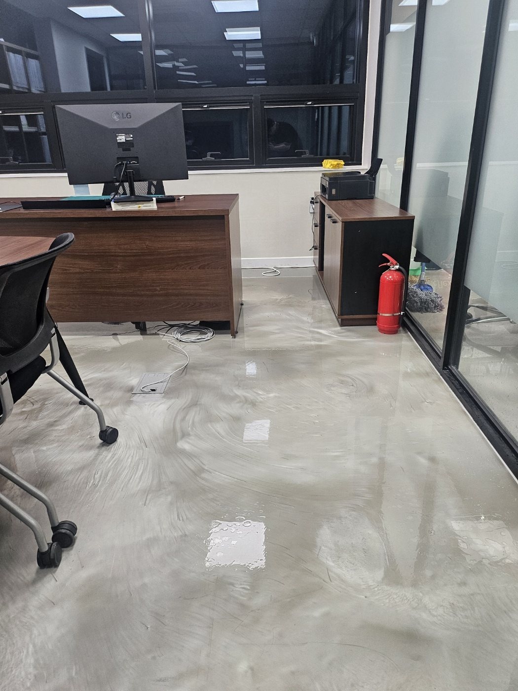
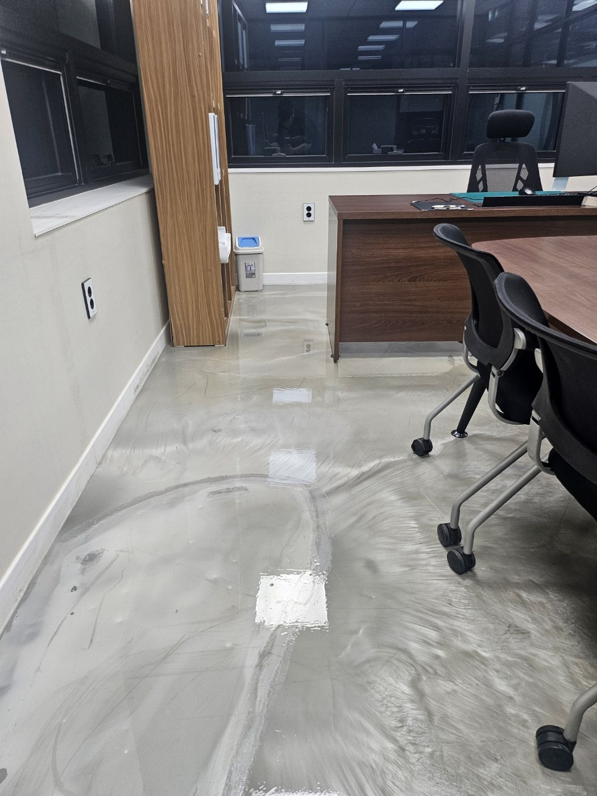
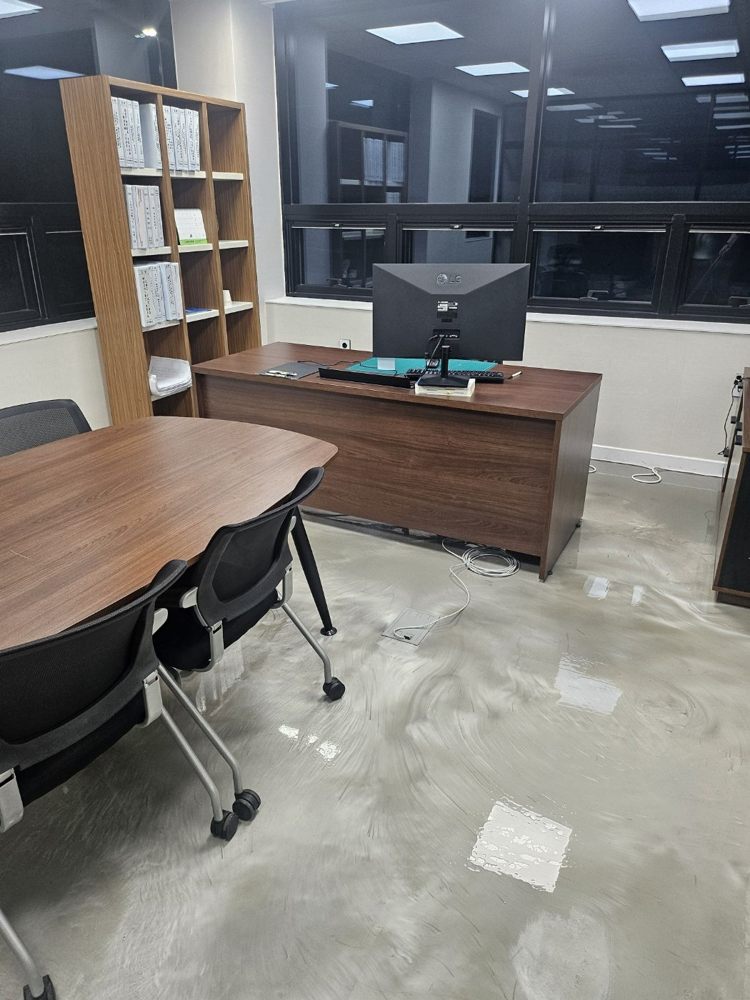
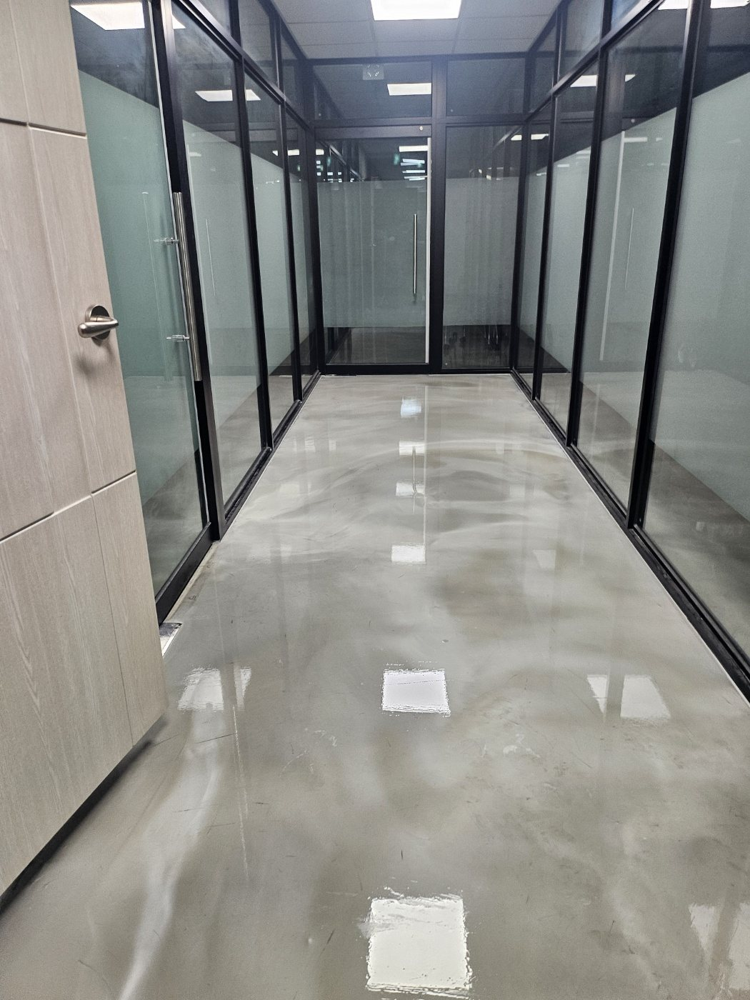
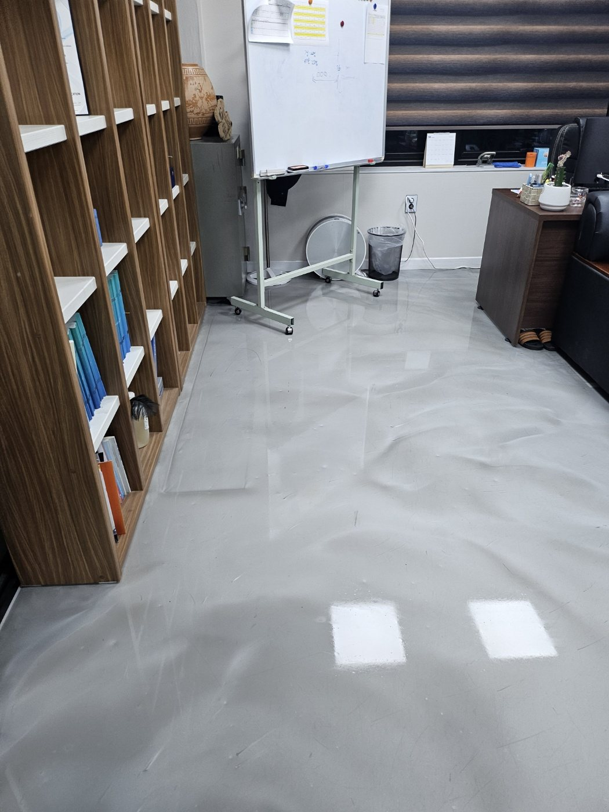
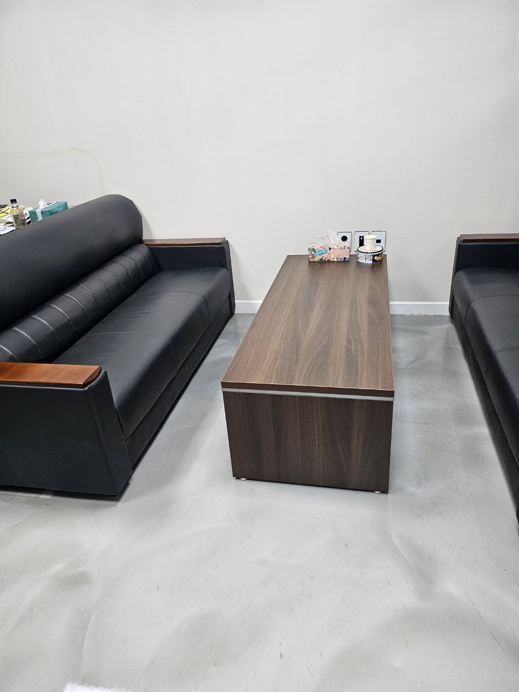
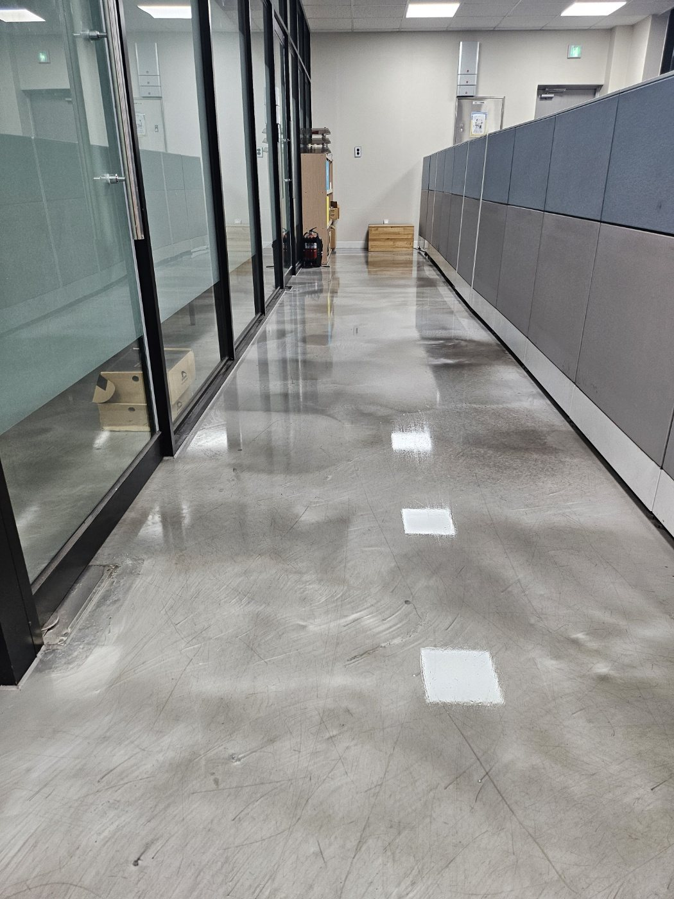
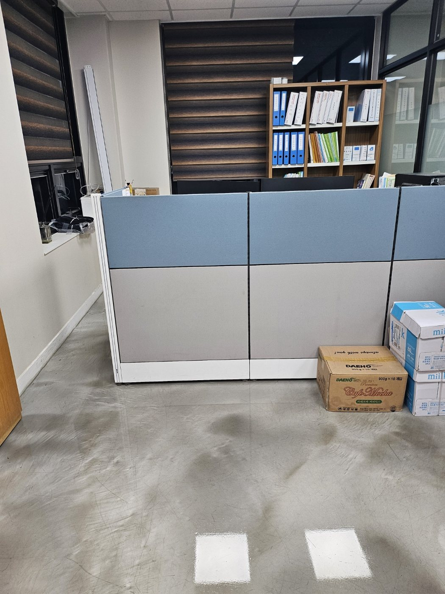
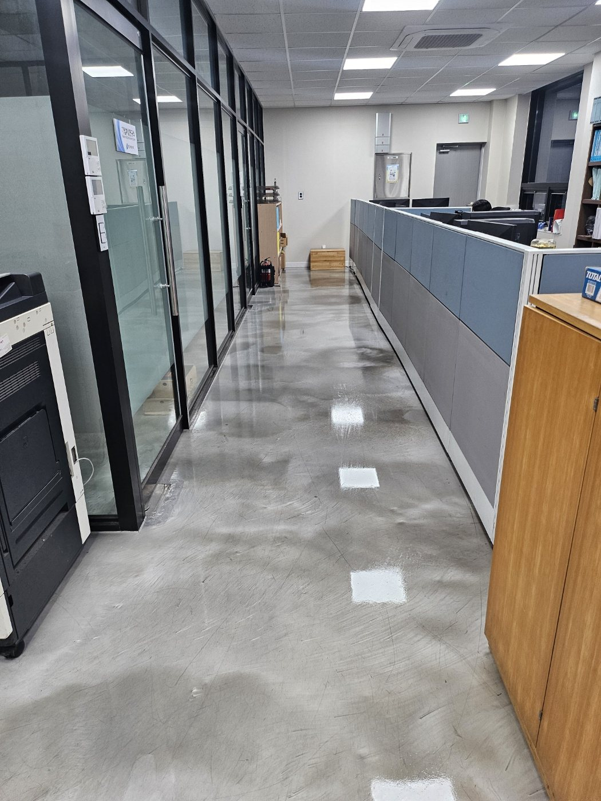

김해 상동공단 사무실 바닥청소 | 바닥 집중세척 작업사례
김해 상동공단권 사업장을 기준으로 구성한 사무실 바닥 집중세척 작업사례입니다. 사무실과 회의공간은 의자 바퀴, 사람 이동, 먼지와 미세오염이 반복되면서 바닥 표면이 쉽게 탁해질 수 있어 넓은 면적을 구역별로 나눠 세척하는 방식이 중요합니다.
현장 사진으로 보는 작업 내용
각 사진 아래에 실제 공간에서 확인할 수 있는 관리 포인트를 자세히 설명했습니다. 단순히 사진만 나열하지 않고 바닥, 가구 주변, 공용동선과 장비 작업 범위를 함께 확인할 수 있도록 구성했습니다.

사무실 바닥 전체 세척 진행
책상과 이동식 의자 주변까지 바닥 전체에 세정 작업이 진행된 모습입니다. 사무실은 의자 바퀴와 신발 이동으로 미세오염이 넓게 퍼지기 때문에 한 구역씩 나눠 오염을 풀어내고 잔여 오염이 남지 않도록 정리하는 과정이 필요합니다.

책상 주변과 벽면 쪽까지 세척
가구가 놓인 공간은 눈에 잘 보이는 중앙부보다 책상 옆과 벽면, 수납장 주변에 먼지와 생활오염이 누적되는 경우가 많습니다. 이동 가능한 공간을 확보하면서 가장자리까지 세척 범위를 넓혀 관리합니다.

회의공간 바닥 오염 집중관리
회의 테이블과 의자가 있는 공간은 여러 사람이 반복적으로 이동하는 만큼 바닥에 잔흔과 미세먼지가 빠르게 쌓입니다. 의자 하부와 테이블 주변까지 포함해 통행 구간을 전체적으로 세척합니다.

유리 파티션 복도 바닥 정리
복도는 사무실 내부의 오염이 이동하면서 집중되는 구간입니다. 유리 파티션 가장자리와 출입문 앞쪽까지 확인해 바닥 표면의 묵은 오염과 흔적을 단계적으로 정리합니다.

수납공간과 업무공간 바닥 관리
수납장, 화이트보드, 업무용 집기 주변은 물건이 많아 청소가 놓치기 쉬운 구역입니다. 바닥에 남은 먼지와 이동 흔적을 정리하고 넓은 바닥면이 균일하게 보이도록 마무리합니다.

휴게공간 바닥까지 함께 관리
소파와 테이블이 있는 휴게공간도 정기적으로 사람이 이용하기 때문에 좌석 주변과 테이블 하부에 먼지가 쌓이기 쉽습니다. 업무공간과 함께 관리하면 사업장 전체의 청결감을 높일 수 있습니다.

넓은 복도 바닥 세척 후 상태
공용 복도처럼 길고 넓은 바닥은 한 방향으로만 청소하면 얼룩이 남기 쉬워 작업 구역을 나눠 진행합니다. 세정 후에는 표면 상태를 다시 확인해 오염이 남은 부분을 추가로 정리합니다.

파티션 사무실 공용동선 관리
좌석이 밀집된 공간은 개인 좌석보다 중앙 통로가 더 빠르게 오염됩니다. 의자 바퀴 주변과 직원 이동 동선을 중심으로 관리하면서 바닥 전체의 균형을 맞춰 정리합니다.

사무실 바닥 마무리 상태 확인
작업이 끝난 뒤에는 출입구에서 사무실 안쪽까지 바닥 표면을 확인합니다. 구역별로 세척한 흔적이 남지 않도록 전체 상태를 다시 살펴보고 업무 시작 전 깔끔한 상태로 마무리합니다.
김해 사업장 청소 무료 방문견적
사무실, 공장, 학원, 상가, 화장실, 회의실 등 사업장 유형과 이용량에 맞춰 작업 범위와 관리 주기를 상담합니다.